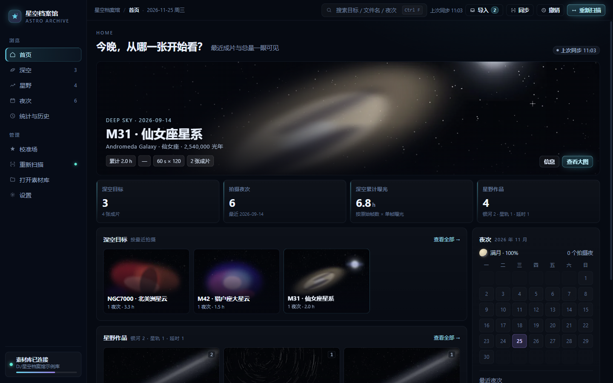
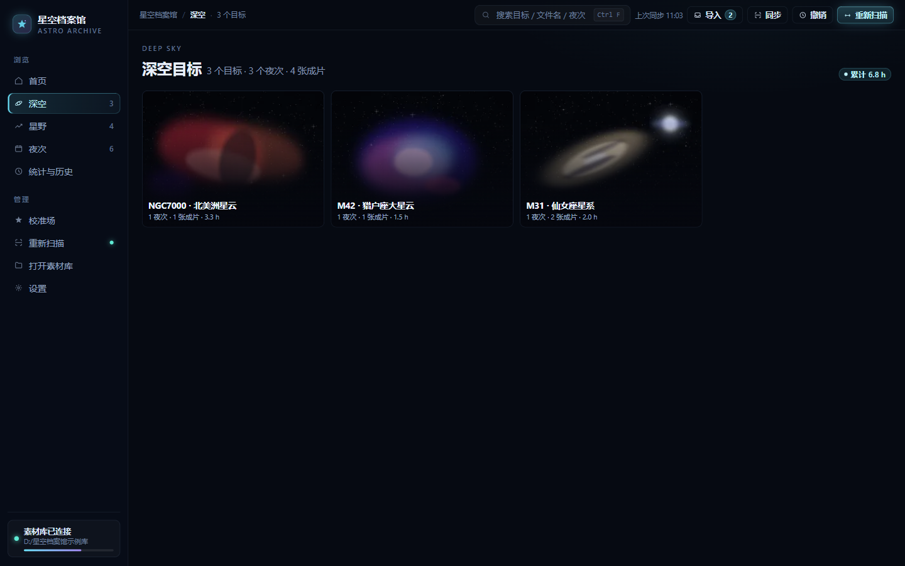
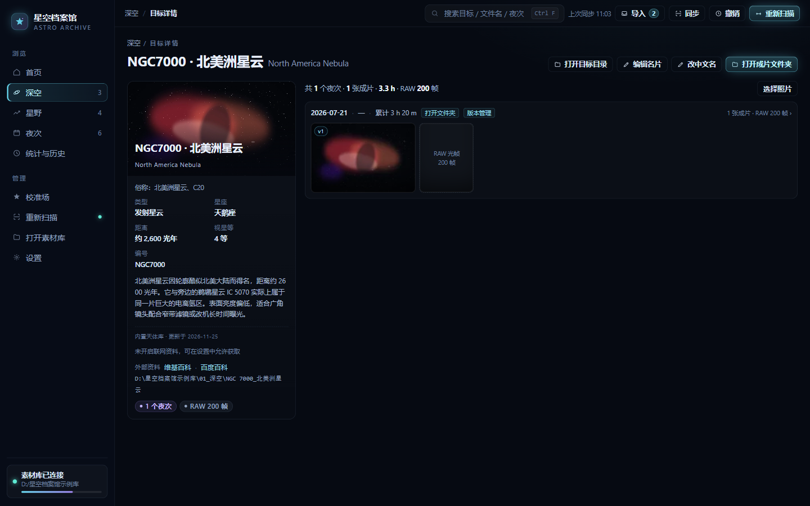
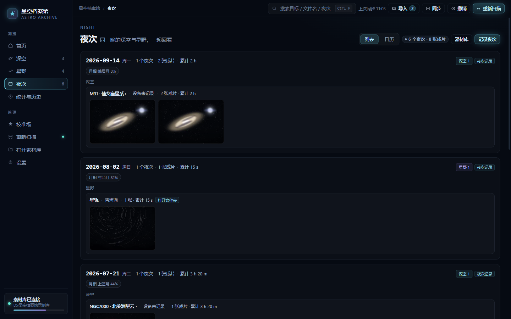
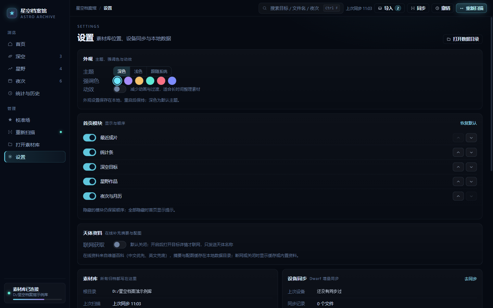

使用说明 · v0.4.0
从一堆照片，到一座档案馆
星空档案馆是一款运行在本机的天文摄影素材管理软件，帮你把散落在硬盘里的深空与星野作品，整理成能检索、能追溯、能长期保存的个人档案馆。
目录
阅读建议：第一次使用按 1 → 3 → 4 → 5 的顺序看；已经建好库的用户可以直接跳到第 6 节以后。
1 它解决什么问题
拍完一夜，文件往往散落在相机卡、Dwarf 设备的 Wi-Fi 目录和几个临时文件夹里。几个月后再想找「去年在坝上拍的那版猎户座」，只能靠翻目录和猜文件名——时间越久，越难找。
星空档案馆把这件事拆成三件小事：
- 找得到：按天体、夜次、文件名、地点检索，缩略图直接铺开，不用记文件名。
- 记得住：每个目标有「天体名片」，每个夜晚有「夜次记录」——月相、天气、器材、后期思路都能留下。
- 守得住：只在素材库里做索引和缩略图，数据库每天自动备份，误操作可以撤销。
2 三个核心概念
软件里反复出现的词只有三个。理解了它们，后面的操作就顺了。
| 概念 | 含义 | 在素材库里长什么样 |
|---|---|---|
| 目标 | 一个天体或一个拍摄主题，例如 M42、IC 1396、银河拱桥。 | 深空目标是 01_深空 下的一个文件夹。 |
| 夜次 | 一个拍摄夜晚，记录日期、地点、月相、天气和使用的器材。 | 星野按 02_星野/子类/日期_地点 归档。 |
| 成片与版本 | 最终保存下来的作品。同一个目标、同一个夜晚可以有多版后期，标记出最终版即可。 | 版本是成片自己的字段，来源夜次单独关联，不会复制文件。 |
一句话理解：目标是「拍什么」，夜次是「哪一晚拍的」，成片是「最后留下的那张」。
3 安装与第一次启动
3.1 选一个版本
| 版本 | 特点 | 适合场景 |
|---|---|---|
| 便携版 AstroArchive_x.y.z.exe |
双击即用，不写注册表，可放在移动硬盘或 U 盘。 | 试用、临时换电脑、随身携带。 |
| 安装版 AstroArchive_x.y.z_setup.exe |
按当前用户安装，可选安装目录，创建桌面与开始菜单快捷方式。 | 长期在固定电脑上使用。 |
3.2 第一次启动
- 1选择素材库位置可以新建一个空文件夹，也可以指向已有的照片目录。建议放在容量充足、会被备份的磁盘上。
- 2软件自动补全目录缺少的标准目录会被创建，已有文件夹不会被改动。
- 3首次扫描软件读取照片的尺寸、拍摄时间、设备等信息，并生成缩略图。文件多时请耐心等待，进度条可以随时取消，已写入的记录会保留。
- 4进入首页扫描完成后，目标、夜次、作品会自动归好类。
素材库的标准结构如下，自己往里放照片时按这个结构走，扫描识别会最准：
我的素材库/ ├─ 01_深空/ │ └─ M42_猎户座大星云/ 每个目标一个文件夹 ├─ 02_星野/ │ └─ 银河/ 子类 │ └─ 2025-11-18_坝上/ 日期_地点 ├─ _收件箱/ 待识别、待导入的新素材 └─ _dwarf mini校准场/ 平场、暗场等校准素材
4 界面导览

左侧导航
「浏览」分组放日常入口：首页、深空、星野、夜次、统计与历史；「管理」分组放校准场、重新扫描、打开素材库和设置。底部显示当前素材库路径。
顶部工具条
| 按钮 | 作用 |
|---|---|
| 搜索框 | 搜索目标、文件名、夜次。按 Ctrl + F 可随时聚焦，回车查看全部结果。 |
| 导入 | 识别并导入 _收件箱 里的新素材，角标数字表示待处理数量。 |
| 同步 | 从 Dwarf 设备增量拷贝新会话，只拷缺失文件。 |
| 撤销 | 撤回最近一次导入、同步、文件夹重命名或信息修改。 |
| 重新扫描 | 重建索引。日常只需增量扫描，怀疑索引异常时再做完整扫描。 |
提示：扫描和缩略图生成会占用一点 CPU。整理素材时如果觉得卡，可以在设置里打开「减少动画」。
5 一条素材的旅程
把新拍的照片放进档案馆，通常走这条路线：
- 1放进收件箱把文件或整个文件夹拖进软件，软件会复制到 _收件箱/批次，原始文件保持不动。
- 2识别与命名根据目录、文件名、水印信息推断目标与拍摄日期，给出建议归档位置；拿不准的会标成「待确认」。
- 3确认导入确认后文件被移动到 01_深空 或 02_星野 的对应目录，并写入索引。
- 4补充夜次在夜次页补上地点、月相、天气、器材和后期思路，这些信息会关联到当晚所有作品。
- 5挑出成片给照片评分、置顶，把满意的版本设为最终版。
- 6随手备份数据库每天自动备份，重要整理完成后也可以在设置页确认一下最近备份时间。
6 深空与目标详情

深空页不是按文件平铺，而是按「目标」聚合。点进任意目标，能看到这个天体的全部历史版本。

- 天体名片：类型、星座、距离、星等、简介等。可以在设置里开启联网补全，也可以手动修改并锁定。
- 版本时间线：同一目标的多次后期按时间排列，可标记最终版，方便对比进步。
- 来源夜次：每个版本关联实际拍摄的夜晚，点开即可回看当晚的天气和器材。
- 文件操作：「打开文件夹」「定位文件」直接调用系统资源管理器，方便继续后期。
建议：每个目标只保留真正想留下的版本。版本太多时，用评分和最终版标记来区分，比删文件更安全。
7 夜次与星野

夜次是这套软件里最值得花时间填的部分。一次拍摄的月相、天气、视宁度、器材，事后往往记不清，但恰恰是复盘时最有用的信息。
| 字段 | 说明 |
|---|---|
| 日期 / 子类 | 同一天可以分别记录深空与星野，星野还可细分银河、星轨、广域等。 |
| 地点 | 拍摄地名称，会参与检索，例如「坝上」「青海」。 |
| 月相与亮度 | 记录月光条件，方便解释画面背景亮度和可用曝光时间。 |
| 天气 / 视宁度 / 波特尔 | 透明度、稳定度和光害等级，属于经验积累型字段。 |
| 器材 | 关联器材库中的组合，统计时可以按设备回看作品。 |
| 后期备注 | 堆栈张数、总曝光、拼接方式、调色思路都可以写在这里。 |
星野作品会自动按「子类 / 日期_地点」归档，和夜次一一对应。同一晚的深空与星野，可以分别记录，互不干扰。
8 检索与批量整理
素材一多，检索就是最高频的操作。顶部搜索框支持三类关键词：
- 目标：输入「M42」「猎户」「IC1396」都能命中。
- 文件名：记得文件名片段时直接搜。
- 夜次：输入地点或日期片段，找到当晚的全部作品。
搜索结果里可以继续批量整理：统一评分、置顶、补充地点、修改备注。批量修改会写进历史记录，仍然可以用「撤销」回退。
9 设置、备份与日志
设置页集中管理外观、本地数据和维护入口，日常用到的开关都在这一页。
9.1 外观与首页
主题支持深色、浅色和跟随系统；强调色有六种可选；「减少动画」适合长时间整理素材。首页模块可以调整顺序或隐藏，把最常看的内容放在最上面。

9.2 数据库备份
软件每天生成一份索引数据库快照，最多保留最近 7 份：
- 启动时检查一次，长期开着每 4 小时再检查一次；当天已有备份就跳过。
- 备份位置在数据目录的 backups 子目录，文件名形如 archive_2026-11-25.db。
- 设置页列出最近备份的日期和大小，点「恢复」即可回滚。
恢复流程只有两步：确认后，软件先把当前数据库另存为 archive_before_restore_*.db，再用备份覆盖并自动重启。素材库里的照片不会被改动，重启后如需补全索引，再扫描一次即可。
9.3 运行日志
错误、警告和异常会写入数据目录的 logs\app-YYYY-MM-DD.log，保留最近 14 天。反馈问题时附上对应日期的日志即可，设置页可以直接打开日志目录。
10 数据存放与隐私
所有数据都在本机，没有账号，也不需要登录。默认数据目录是 %APPDATA%\AstroArchive：
%APPDATA%\AstroArchive/ ├─ archive.db 索引数据库（目标、夜次、成片、版本） ├─ thumbs/ 缩略图缓存 ├─ profiles/ 天体名片缓存 ├─ backups/ 每日数据库备份 └─ logs/ 运行日志
照片本身始终留在你的素材库里，数据目录只保存索引和缩略图。换电脑时：安装软件 → 把素材库指向原来的位置（或拷到新硬盘）→ 用 backups 里最新备份替换新机器的 archive.db → 启动后扫描一次补全。
11 常见问题
| 照片会被移动或删除吗？ | 扫描只读。只有「导入收件箱」和「设备同步」会按规则放置文件，且都能撤销。卸载软件不会删除素材库。 |
| 为什么有些缩略图是空白？ | 部分相机 RAW、FITS 或损坏文件无法直接生成预览，但文件仍会登记并可打开。更新软件后再扫描一次通常能改善。 |
| 扫描很慢怎么办？ | 首次扫描需要为每张照片生成缩略图，比较耗时。之后是增量扫描，只会处理新增或修改过的文件。 |
| 备份和素材库是什么关系？ | 备份只保存索引数据库，体积很小；照片由你自己的硬盘和备份方案负责。两者互相独立。 |
| 卸载会丢数据吗？ | 安装版默认保留 %APPDATA%\AstroArchive，重装后可以继续用；素材库更不受影响。 |
| 支持哪些格式？ | 常见图片（JPG、PNG、TIFF、WebP、HEIC 等）与视频（MP4、MOV 等）；相机 RAW 和 FITS 也可以登记。 |
12 版本与反馈
0.4.0 新增：数据库每日自动备份与一键恢复、运行日志落盘、NSIS 安装版与便携版并行发布。
常用入口速查
| 想做的事 | 入口 |
|---|---|
| 搜索目标或文件 | 顶部搜索框，按 Ctrl + F 随时聚焦 |
| 导入新素材 | 顶部「导入」，或把文件 / 文件夹直接拖进窗口 |
| 从 Dwarf 取新文件 | 顶部「同步」，只拷贝缺失的会话 |
| 完整重建索引 | 侧栏「重新扫描」 |
| 查看备份与数据位置 | 侧栏「设置」→ 本地数据 / 数据库备份 |
| 打开素材库文件夹 | 侧栏「打开素材库」 |
| 找回误操作 | 顶部「撤销」 |
使用中遇到问题或有功能建议，欢迎通过以下方式反馈。反馈时请附上软件版本、系统版本和对应日期的日志，定位会快很多。
反馈渠道：GitHub 仓库 github.com/thinkerzero2005/astro-archive 的 Issues 页面，或邮件 ThinkerZero2005@outlook.com。
本文档对应星空档案馆 0.4.0，界面细节可能随版本迭代略有变化，以实际版本为准。